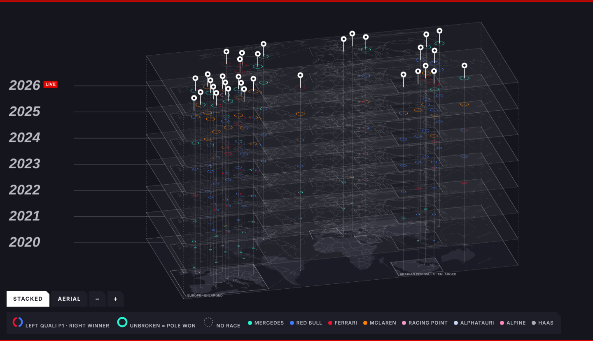
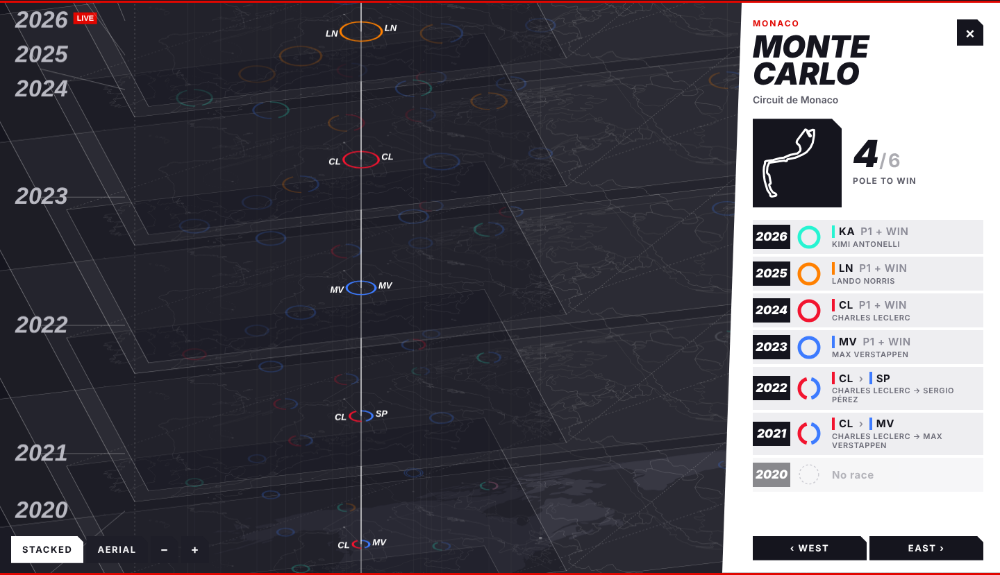

One Lap /
Race Day
Does the fastest qualifier win the race? Seven F1 seasons, 32 circuits, stacked as map layers. Each ring is one race: left half pole, right half winner.
Open the atlasHover a pin and its line grows. Click to fly in, step city to city.


Stacked, then aerial: seasons collapse into concentric rings.



City pages: track outline, pole-to-win count, every season.
Unofficial fan project, not affiliated with Formula 1. Data: F1DB (CC BY 4.0). Geography: Natural Earth.